Case study 01 Professional · AI product
WeChat Pay Balance Upgrade Assistant
WeChat Pay users who reach their annual payment limit must upgrade their account, a step that verifies their identity and bank account, before they can keep paying from their Balance. Around 1.12 million people reach the limit each day, and only about 60% finish the upgrade. Over two pilots, I took an AI assistant from answering their questions to guiding them through the whole upgrade.
- Role
- Product Manager, WeChat Pay (Tencent)
- My part
- User research and data analysis, product strategy, user flows and wireframes, agent workflow, prompts and knowledge base, QA and evaluation
- Team
- WeChat Pay design team (final UI), engineering (build)
- Time
- May 2026 – present

Each step answered a question the last one raised
-
Listen
Why do people get stuck at the limit?
3 barriersfound in 600+ posts and 2,127 complaints
-
Phase 1 · Answer
Can an AI assistant help people understand?
58.9% → 62.2%finished the upgrade
-
Phase 2 · Guide
Where do people actually stop, and why?
+4.82 pointsmore people upgraded
-
Phase 3 · Connect
Can the same help reach other payment tasks?
Plannednot built yet
People didn't understand the upgrade, so many never started
I analyzed customer complaints, backed by social listening on popular platforms: 600+ social posts and 2,127 complaint cases. Through thematic analysis, I grouped them by what was stopping people, and three barriers to understanding kept coming up.
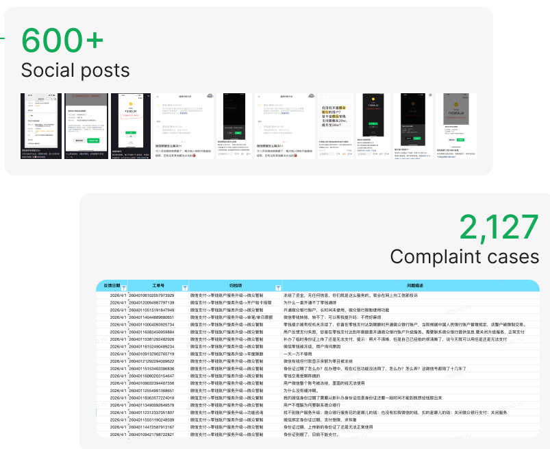
Share of complaint cases, from my thematic analysis and grouping of the posts and cases.
I wanted to learn if an AI assistant could help people understand WeChat Balance rules, ask about their own situation, and follow up when something was unclear.
Answering questions lifted upgrades by 3.2 points
I designed the assistant's prompts and knowledge base from approved product and policy documentation, adapted the approved answers, and ran QA before launch. The assistant could:
- answer free-form and follow-up questions
- present FAQs on fees, safety, eligibility and benefits
- answer from approved product and policy documentation
- guide people to the right upgrade path or to customer support
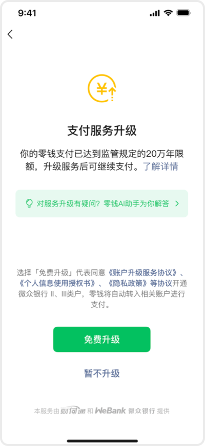
Upgrade pageA new entry point invites questions
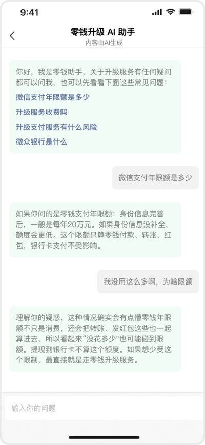
AssistantIntroduction, FAQs and free-form chat
An encouraging early signal, not proof. [How people were assigned to each group, and for how long]
Answers helped, but about 38% of people with the assistant still didn't finish. Better answers couldn't tell me where they gave up, so I went to the funnel.
The funnel showed two different gaps
I reviewed the full upgrade journey, counted in unique visits per day, to find where people stopped. 44% of people reaching the limit could upgrade right away, and most of them did. The losses were on the manual path.
Eligible for an immediate upgrade
- Reached the payment limit1,115,380
- Eligible for immediate upgrade491,99444.11% of those reaching the limit
- Upgrade completed440,33589.50%
Manual upgrade path
- Visited the manual upgrade page585,57552.50% of those reaching the limit
- Tapped “Upgrade for Free”409,903Gap 1: only 70.00% of visitors started
- Attempted the upgrade399,65597.50%
- Bank details verified223,985Gap 2: only 56.04% of attempts passed verification
End to end: 664,320 upgrades a day, 59.56% of people reaching the limit.
Gap 1 · Willingness: “Why should I upgrade?”
Some people reached the upgrade page but didn't start. Research suggested they needed clearer explanations of the benefits, whether the upgrade suited them, and what it required.
| Stage | Where people need help | Assistant's role |
|---|---|---|
| Hit a limit | The message leaves them unsure why payments were blocked | Explain the limit and its impact |
| Explore options | Scattered information makes suitable options hard to find | Show the options and explain the differences |
| Decide | Unclear benefits and requirements make the decision difficult | Explain what upgrading offers and requires |
Gap 2 · Capability: “How do I complete the upgrade?”
Others started but didn't finish. Research suggested they struggled with verification and needed clearer instructions when something went wrong.
| Stage | Where people need help | Assistant's role |
|---|---|---|
| Complete the steps | They struggle to find where to start and get help | Show where to start and guide each step |
| Fix a problem | Error messages leave them unsure how to continue | Explain the error and offer a next step |
One assistant for the whole upgrade
I redesigned the assistant's flow so it works like a bank's lobby manager, the staff member who asks what you need and walks you to the right counter. It explains the limit, clarifies options, supports the decision, guides each step and helps resolve problems. Its pattern is: explain the options, act only with approval, verify the result.
Compared with Phase 1, it can complete the upgrade inside the chat and verify across phone numbers on linked cards. It's backed by a broader knowledge base, a more structured system prompt, and an evaluation process. I designed the agent workflow, prompts and knowledge base, and ran evaluation and iteration; engineering built it.
Product documentation
- Regulatory and bank requirements
- Account and verification rules
- Upgrade and recovery procedures
User context
- Account status, product type and eligibility
- Current page and journey stage
- Verification and error status
AI infrastructure
- Foundation model and system prompt
- Intent and context management
- Knowledge retrieval and tool calling
- Response generation and validation
- Safety guardrails
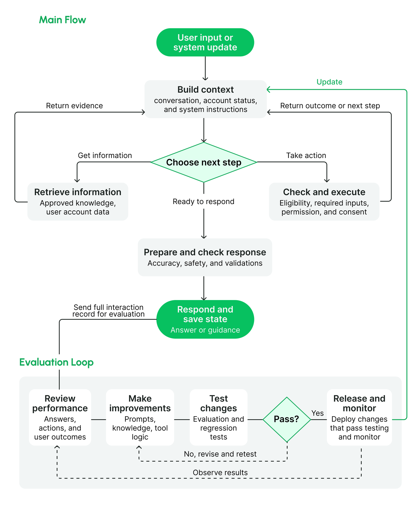
How each turn works
- Build context from the conversation, account status and system instructions.
- Choose the next step: get information (approved knowledge, account data), or take action after checking eligibility, required inputs, permission and consent.
- Prepare and check the response for accuracy, safety and validity.
- Respond and save state, sending the full interaction record to evaluation.
How it improves
- Review performance: answers, actions and user outcomes.
- Make improvements to prompts, knowledge and tool logic.
- Test changes with evaluation and regression tests.
- Release and monitor only what passes; otherwise revise and retest.
The new upgrade flow
I designed the flow and mid-fidelity wireframes; the design team applied the WeChat design system. English translations are added in blue.
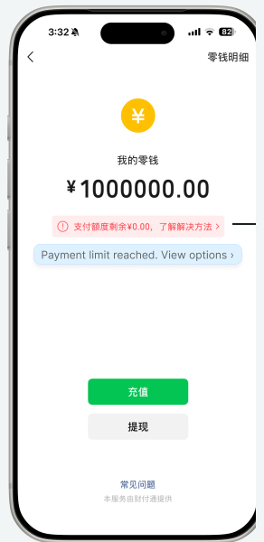
1 · Limit reachedA link to view options
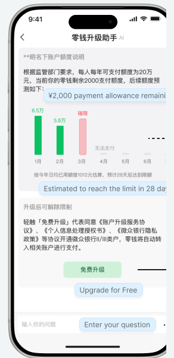
2 · Limit forecastPast usage, and when they'll reach the annual limit
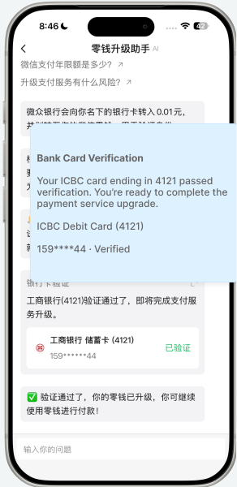
3 · Automatic verificationThe assistant checks the card in chat
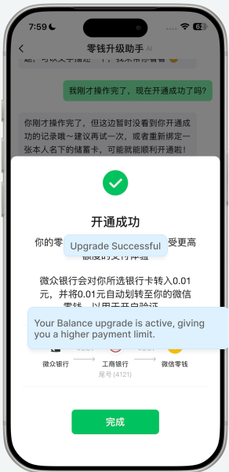
4 · Upgrade completeA higher limit, confirmed in chat
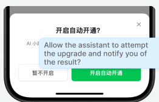
Background upgrade
I proposed letting people in a hurry continue the upgrade in the background, with their approval, and get a notification when it finishes.
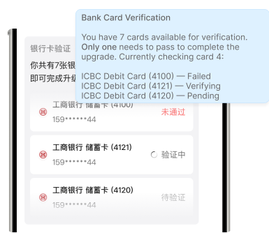
Verification across linked cards
I proposed this: if verification fails with one card's registered phone number, the system tries the person's other linked cards. Only one needs to pass.
If it still fails, the assistant offers a next step: customer support, adding personal information, or linking a new bank card.
Phase 2 pilot results
14-day pilot, about 5,600 people in each group. [Compared with no assistant or with Phase 1? Are −8.12% and −13.67% relative changes?] Until that's confirmed, don't compare this lift directly with Phase 1's.
The same pattern (explain the options, act only with approval, verify the result) could help with payment tasks well beyond the upgrade.
Next: one assistant for payment tasks across WeChat
The plan connects Xiaowei, WeChat's general AI assistant, with payment expertise and services. Xiaowei understands what the person wants and hands payment tasks to a WeChat Pay Assistant.
Xiaowei
Understands the person's goal and delegates the task
WeChat Pay Assistant
- Explain options
- Act with approval
- Verify the result
Products and services
- Wallet, identity and limits, payments and refunds, credit card repayment, family payments, Pay Score
- Utilities, wealth and insurance, travel, shopping, public services, entertainment
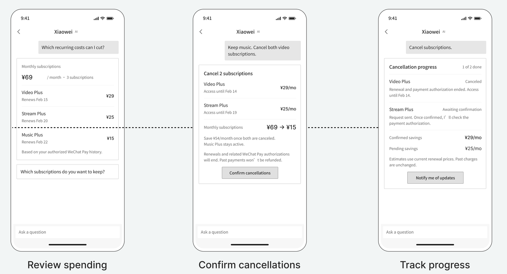
Intended outcome: complete more payments
Help more people finish payments, growing transaction volume.
Intended outcome: fewer support requests
Help more people resolve issues themselves, lowering support costs.
One problem can look like two
What worked
- Separating “won't” from “can't” showed what each person needed: willingness needed reasons; capability needed steps.
- Explaining isn't the same as unblocking. Phase 1 explained; Phase 2 had to change the flow.
What I don't know yet
- Phase 2 changed both the AI and the flow, so I can't yet say which part drove the lift.
- Both pilots were short. [Add any later results]
Next
- [Suggested, confirm: test the AI guidance separately from the flow changes]
- Phase 3, if it goes ahead